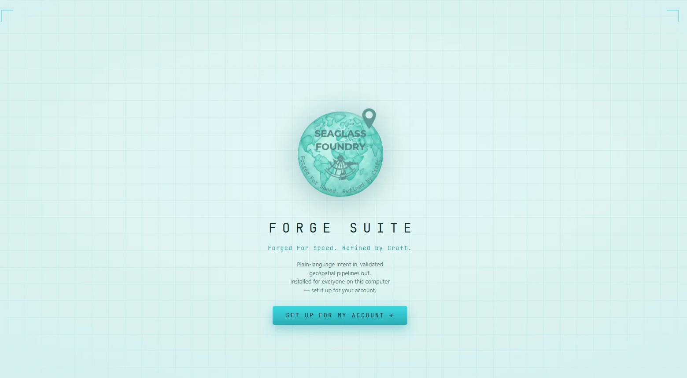
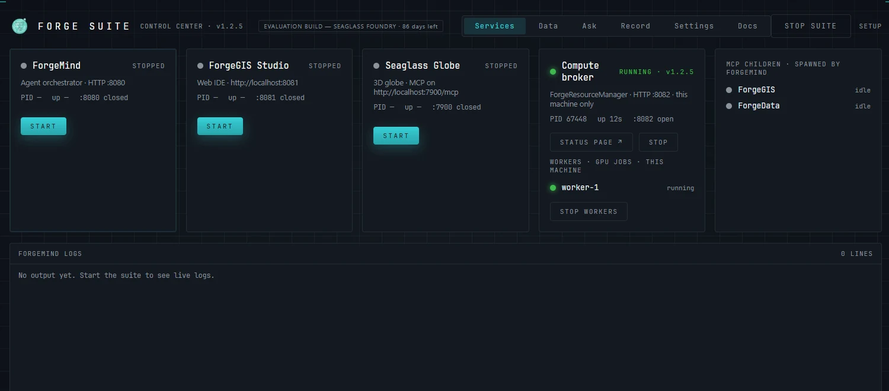
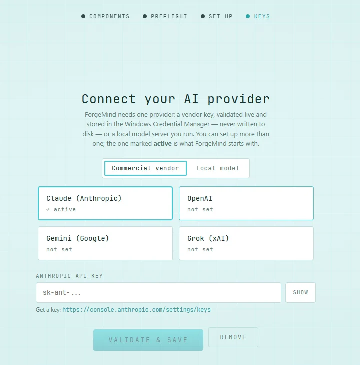
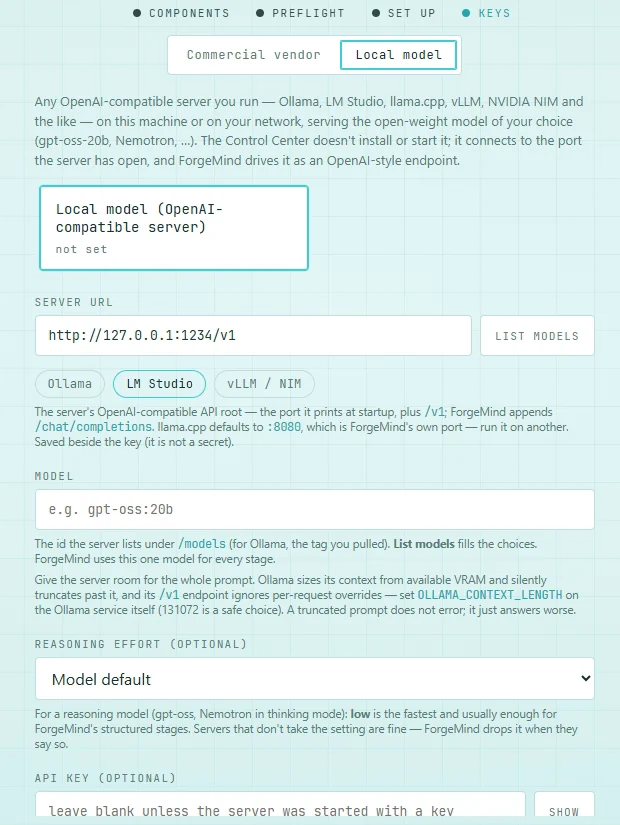
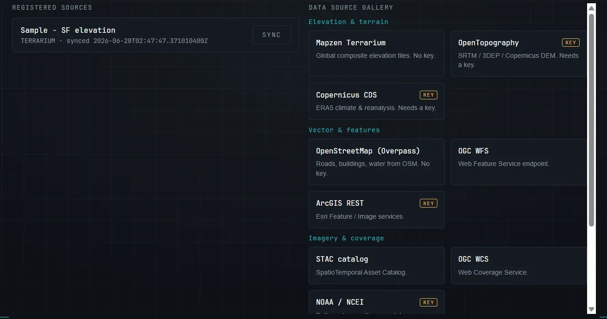
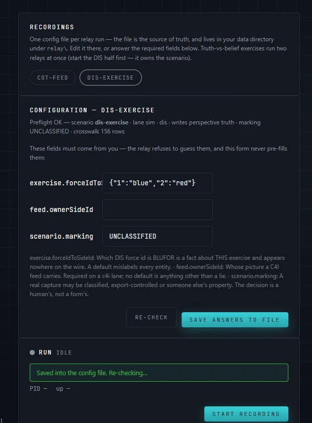
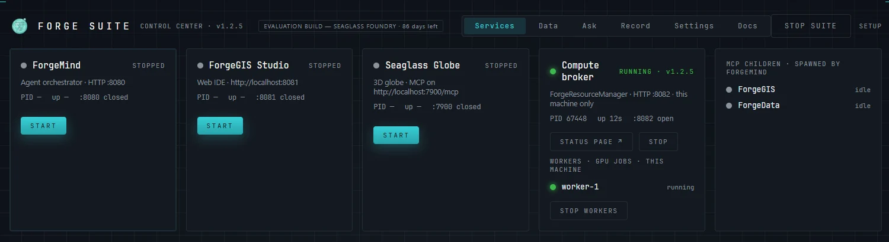

One download that installs, configures, and operates the Forge suite
A single installer that is also a living dashboard. One download lays down a private Java runtime and the Forge suite, connects the AI model you choose, runs the services, manages data, records exercises, and lets an operator chat with the agent — all from one window, with no prerequisites on the target machine.


One window, two moods. The UI shifts from light “front of house” onboarding to the dark “engine room” dashboard once the suite goes live, so the mode you are in is always obvious.
Three short answers for the technical evaluator.
The Seaglass Control Center is the Forge suite's installer and its operations console in one application. It is built for people who would rather evaluate a running system in minutes than assemble one over an afternoon.
A suite of engines is only evaluable if it can be stood up. The Control Center removes every prerequisite: no JRE to install, no dependency hunt, no config files to hand-edit to get running. Connect a model and you are running — with a model server you run on the workstation and the bundled sample elevation dataset, even on a machine with no internet.
The same window that installs the suite also runs it: service control, health, live logs, the data catalog, exercise recording, and agent chat. Setup runs once for each account; after that the Control Center opens straight onto the dashboard.
Five steps, one window.


The Control Center runs ForgeMind, which spawns ForgeGIS and ForgeData as MCP children, plus whichever optional components you installed: Studio, Seaglass Globe™, ForgeRelay, and the compute broker. Each gets its own memory cap. Ports are configurable and persisted through every launch and health check, and the Data tab puts a one-click gallery of sources (OpenTopography, Copernicus, STAC, PostGIS, and more) beside your catalog and the machine's shared one.
| Component | Role | Port |
|---|---|---|
| ForgeMind | Agent orchestrator (HTTP + MCP host); spawns the others | 8080 loopback + token |
| ForgeGIS | GPU geospatial compute engine (MCP stdio child) | stdio |
| ForgeData | Dataset catalog + ingesters (MCP stdio child) | stdio |
| ForgeGIS Studio (opt-in) | Web workspace for building and running pipelines | 8081 loopback |
| Seaglass Globe (opt-in) | 3D view and the agent's presentation surface (native binary pair; needs a real GPU) | 7900 loopback + bearer |
| ForgeRelay (opt-in) | Records live DIS and Cursor-on-Target exercise traffic into a scenario library | UDP 3000 DIS · 6969 CoT set per config |
| Compute broker (opt-in) | Job queue and GPU workers for heavy raster batch jobs | 8082 this machine, or a fleet |

New in 1.2.5. With ForgeRelay installed, the dashboard gains a Record tab that listens to a live exercise and writes it into a scenario library — one GeoPackage file, in the same scenario format Seaglass Globe replays.
DIS simulation traffic is recorded as ground truth. A Cursor-on-Target feed is recorded as one side's picture, never as truth. Run both at once and the library holds what happened beside what one side believed.
Some facts about an exercise never appear on the wire: which force is which side, and the marking the recording carries. The relay refuses to start until a person answers them, and writes the answers into the recording's config file.
Live counters show what is arriving and what is being refused or dropped, in red. A silent feed says so rather than looking healthy, and every stop ends in a verdict — complete, refused, or stopped with holes — so a gap is reported when the run ends, not discovered later.

Starter configurations for a DIS exercise and a CoT feed are written at setup. HLA recording needs an RTI, which the suite doesn't include. In this release a recording is opened in Seaglass Globe by pointing the globe at its library; the dashboard doesn't do that for you yet.
New in 1.2.5. A job queue plus GPU workers for work like “hillshade every tile in this folder,” where one request becomes hundreds of independent tasks.
Workers run on this machine, or on other machines that pull from one shared broker. Serving the fleet is a switch in Settings; machines on the network need the fleet token, while this machine never does.
A task too large for any worker's GPU memory is refused from the raster's own header, before any GPU work, rather than attempted. A worker that crashes is restarted and its task handed to another; a worker that stops on purpose is left stopped.
In this release ForgeMind (or the frm command line) is what sends the broker work:
ask for batch processing and it submits one job the workers split between them. Studio and the Globe still run their batch jobs locally.

New in 1.2.5. ForgeMind needs one language model to plan and narrate. Choose a commercial vendor, or a model you run on your own hardware.
Claude, OpenAI, Gemini, or Grok. Each key is checked live before it's stored, so a mistyped key is caught at setup rather than when the agent starts.
Point ForgeMind at an OpenAI-compatible server you run — on the workstation or elsewhere on your network — and no request goes to a cloud vendor. Ollama is the tested path. Expect a local model to be slower than a hosted one.
Keys live in the Windows Credential Manager, and only the active provider's key is handed to the agent. Set up several and switch between them from Settings.
New in 1.2.5.
Install for every account on the computer, and each person sets up their own account the first time they open it — with their own keys and their own data.
Alongside each person's own catalog sits a read-only catalog for the whole machine. Publishing a folder to it takes Administrator approval, so what everyone sees is curated.
Evaluation builds carry an evaluation license you accept in the installer, a 90-day evaluation period that starts at first install (unless your evaluation agreement says otherwise), and a badge that shows where you are in it. Settings → About shows the install date and the build.
Local by default: the agent's API never leaves this machine, and only components you turn on — the exercise recorder's feed ports, a broker serving the fleet — listen beyond it.
ForgeMind's HTTP API binds 127.0.0.1 and requires a per-install bearer token; the
agent API is never exposed to the LAN. The compute broker stays on this machine too, unless you
turn on serving the fleet.
LLM keys, data-source keys, and the bearer token all live in the Windows Credential Manager; the webview runs under a strict CSP.
A future multi-user tier — Studio behind a reverse proxy with TLS, auth, and tenancy — is a distinct shape. Env-driven ports and token auth are its groundwork, named honestly rather than shipped as a promise.
Run the whole suite on one evaluation host, disconnected if required, exercising install, configure, and operate through a single window.
Direct download — no email gate, no form wall.
One download, one window, first result in minutes — on Windows x64, disconnected if required. We read every email.
rich@seaglassfoundry.com